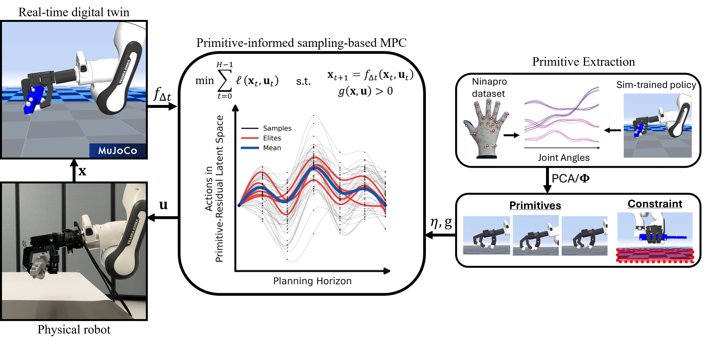
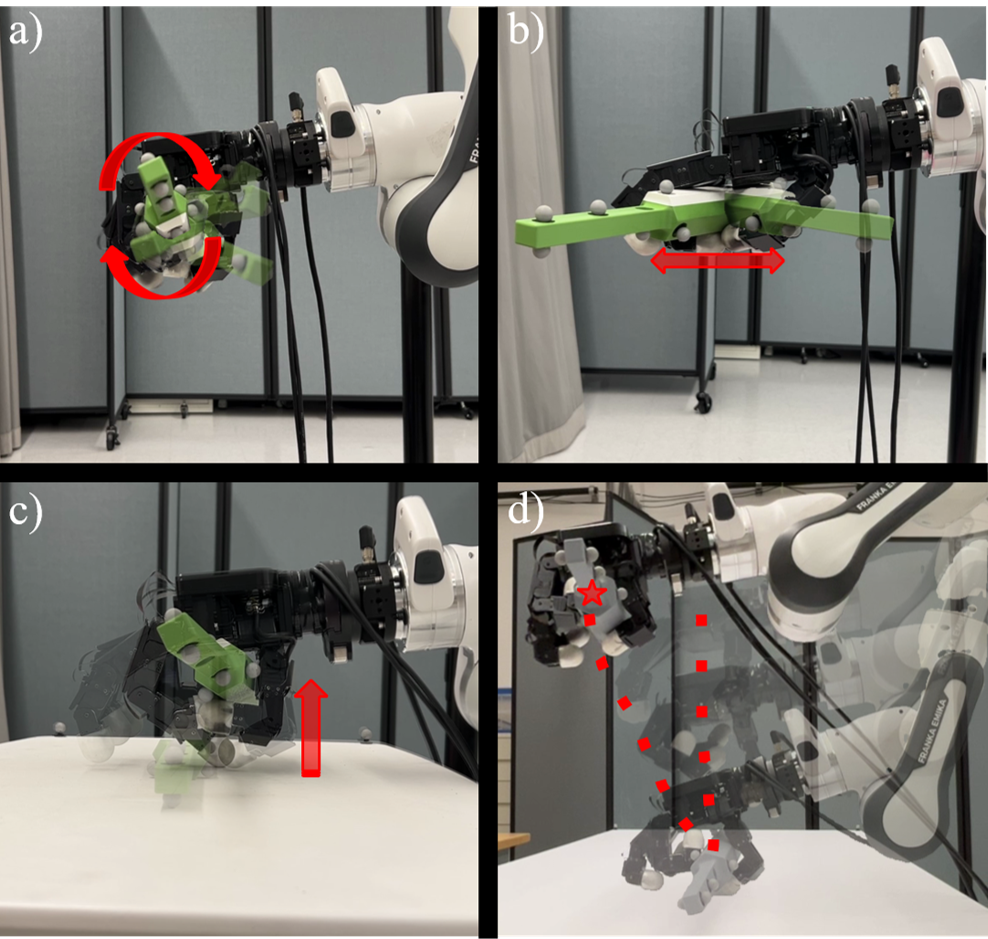
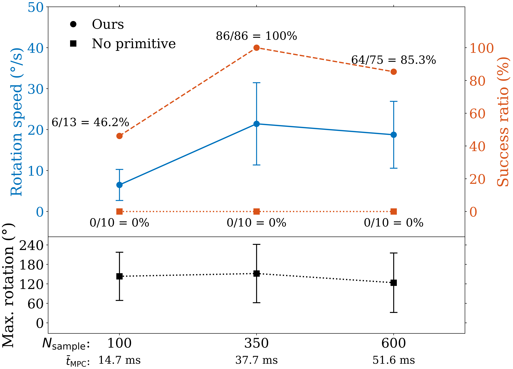
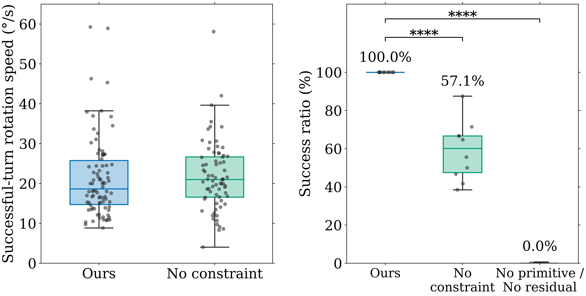

We present a primitive-informed sampling-based model predictive control (MPC) framework for multi-fingered dexterous manipulation. Sampling-based MPC evaluates candidate control trajectories through forward simulation without requiring gradients through complex contact dynamics. However, directly sampling these trajectories in the high-dimensional joint space of a dexterous hand is inefficient and makes performance strongly dependent on the sampling distribution.
Our framework biases sampling using low-dimensional manipulation primitives that encode coordinated finger motions, while simultaneously optimizing joint-level residuals to adapt these motions to the current hand–object configuration. Task-related rollout constraints reject infeasible trajectories during forward simulation, improving the effective use of the sampling budget.
We evaluate the approach on a 16 DoF Allegro hand using a synchronized MuJoCo digital twin. Ablations show that both the primitive and residual are necessary for reliable continuous in-hand rotation, that increasing the sampling budget alone does not recover this coordination, and that rollout constraints substantially improve success rate. A primitive extracted for one object size transfers to other sizes and remains effective under model mismatch. The framework further supports grasping, object reorientation, and coordinated arm–hand manipulation, using primitives extracted from both a simulation-trained policy and human hand-motion data.

System overview. Low-dimensional manipulation primitives bias trajectory sampling toward coordinated motions, while joint-level residuals adapt the sampled actions to the current hand–object configuration. Candidate trajectories are evaluated through forward simulation, and the optimized mean action sequence is executed on the physical system.
A MuJoCo digital twin of the arm, hand, and object is synchronized with the physical system at about 100 Hz. At each update, the cross-entropy method samples candidate spline-parameterized trajectories, rolls them out in MuJoCo, and refits the sampling distribution to the lowest-cost elites; the leading portion of the result is executed while the next update is computed.
Instead of sampling every joint independently, hand commands are reconstructed as u = q̄ + Φz + δq: a few coordinated motion primitives Φ, extracted by PCA from a simulation-trained policy or human hand-motion data, are mixed by coefficients z, and a joint-level residual δq adapts the motion to the current hand–object configuration. Task constraints checked at every simulated step terminate infeasible rollouts early.
All experiments run on a physical 16-DoF Allegro hand mounted on a Franka arm, with object pose from motion capture. Unless noted, the MPC uses a 0.5 s horizon, 6 spline knots, 10 elites, and N = 350 rollouts (about 38 ms per update).

Experimental tasks. a) In-hand rotation, b) Reorientation, c) Grasping, d) Coordinated arm–hand manipulation.
Continuous rotation of a 40 mm hexagonal object held without palm support: any sampling update that fails to find a grasp-maintaining motion results in a drop. No primitive samples directly in joint-command space, as in prior sampling-based MPC for dexterous hands, and stalls at the rotation achievable with the initial grasp. Ours rotates continuously through finger gaiting, completing 86/86 rotations over 10 three-minute trials.
No primitive (joint-space sampling)
Ours (primitive + residual + constraint)
We vary the rollout budget N ∈ {100, 350, 600} for Ours and a No primitive variant. No primitive completes zero rotations at every budget; its maximum accumulated rotation plateaus at about 120–150°, the rotation achievable with the initial grasp, because independently sampled joint motions rarely produce the finger gaiting needed to go further. Ours reaches 46.2% (6/13) at N = 100 and 100% (86/86) at N = 350. At N = 600 the mean update time grows from 37.7 ms to 51.6 ms and success drops to 85.3% (64/75), as slower replanning lets sim-to-real discrepancies accumulate.

In-hand rotation performance versus sampling budget N. Top: rotation speed of successful rotations (left axis) and success ratio (right axis) for Ours (circles) and No primitive (squares). Bottom: maximum accumulated rotation per attempt for No primitive. Mean MPC update time is shown below each N. Error bars denote ± SD.
At N = 350 we remove each component in turn. No residual (0/10) and No primitive (0/30 across three joint-space sampling scales) never complete a rotation, versus 100% (86/86) for Ours: the primitive supplies coordinated structure and the residual the local flexibility to adapt it. Disabling the rollout constraint drops success to 57.1% (72/126, p = 3.25×10-5) while the median speed of successful rotations is unchanged (20.42°/s vs. 18.78°/s, p = 0.604): constraints improve reliability, not speed.

In-hand rotation ablations. Successful-turn rotation speeds are shown for Ours and No constraint, with each point representing one full rotation. Success ratios are shown for these two conditions and the pooled No primitive and No residual ablations. For the first two conditions, each success-ratio data point is computed over one three-minute trial.
Object size. The primitive extracted from the 40 mm object is used without re-extraction on 35 mm and 45 mm objects: success is 97.9% (93/95) and 98.4% (61/62), versus 100% (86/86) at 40 mm. Drop counts (2, 1, and 0) are not significantly different (p = 0.34); speed is unchanged at 35 mm and decreases from 18.78°/s to 13.17°/s at 45 mm (p = 0.046).
Model mismatch. Perturbing the friction coefficient or object mass in the digital twin by ±50% keeps success between 80.9% and 100%. Underestimating friction slows rotation to 13.03°/s (p = 0.002), and underestimating mass is the only condition that significantly increases drops (18 over 30 minutes, p = 9.53×10-4).
40 mm (primitive source)
35 mm
45 mm
The hand starts open above the 40 mm object and the objective is to lift it 10 cm while keeping its orientation. The five grasping primitives come from the NinaPro human hand-motion database (25 subjects, 20 grasps). Ours succeeds in 9/10 trials (lift ≥ 5 cm); No primitive fails in all 10 (p = 1.19×10-4), pushing or tilting the object instead of closing the fingers in coordination.
No primitive
Ours (human-motion primitive)
A cyclic heading command traverses 60° over 10 s, holds for 3 s, and reverses. The task needs no finger gaiting, so joint-space sampling suffices and the effect of the rollout constraint can be isolated. With the constraint, 8/10 trials complete the full sequence, versus 3/10 without; all other trials end in drops, which occur earlier without the constraint. Tracking accuracy while the object is held is unchanged (median heading RMSE 7.87° vs. 8.26°, p = 0.993).
No constraint
With constraint
Each latent knot is augmented with a desired Cartesian end-effector pose for the Franka arm, and the cost penalizes the object’s world-frame pose error and its pose error relative to the wrist (N = 500). Starting with the hand away from the object, the controller establishes a grasp in 9/10 trials and transports the object to within 3 cm of the target in 8/10. The reach, grasp, and transport sequence is never programmed; it emerges from online optimization of the task objective. In the right video, the robot first rotates the object non-prehensilely, then grasps and transports it.
Reach, grasp, and transport
Non-prehensile rotation, then grasp and transport
Settings shared across experiments.
| Parameter | Value |
|---|---|
| Planning horizon | 0.5 s, K = 6 spline knots |
| CEM elites Ne | 10 per update |
| Rollout budget N | 350 (hand-only tasks), 500 (arm–hand task) |
| MPC update time | ~38 ms at N = 350 (AMD Ryzen Threadripper PRO 7995WX, 192 threads) |
| State update / command rate | ~100 Hz digital-twin sync, 333 Hz commands to Allegro |
| Residual std floors | σexplore = 1.0 rad, σrefine = 0.10 rad |
| Primitive-coefficient std floors | σexplore = pmax − pmin, σrefine = 0.3 (pmax − pmin) |
| Explained-variance threshold γ | 90% (4 rotation primitives, 5 grasping primitives) |
| Rotation primitive source | SAC policy trained in simulation on the 40 mm AF hexagon, no domain randomization (5 trajectories, ~1 min) |
| Grasping primitive source | NinaPro: 25 right-handed subjects, 20 grasp motions |
| Rollout constraint | Object–table contact terminates the rollout with a large failure cost |
| Rotation success | One full revolution without a drop; ψdes kept one revolution ahead |
| Grasp success | Object lifted ≥ 5 cm from the table |
| Arm–hand success | Object within 3 cm of the desired position |
| Statistics | Two-sided exact Wilcoxon rank-sum permutation tests; two-sided Fisher exact tests for binary outcomes |